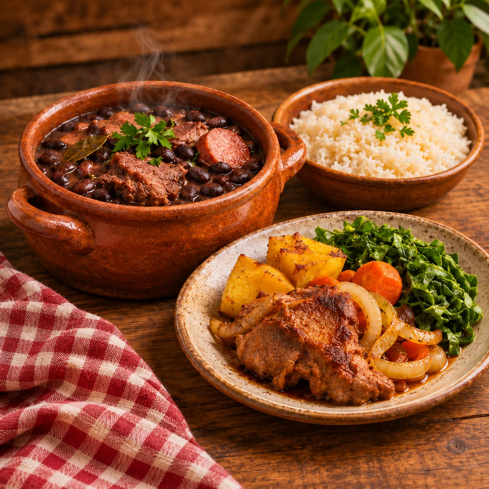

Sabor da VóMarmitaria • Receitas de família
Loja demonstrativaO sabor que traz
boas lembranças.
Comida caseira e receitas para acolher o seu dia.

Avaliação de exemploBairro de exemploHorário de exemplo
Modelo demonstrativo • Imagem ilustrativa